I am a 6th year PhD student in Electrical Engineering and Computer Science (EECS) at UC Berkeley, where I am advised by Ken Goldberg as a member of the AUTOLab and the Berkeley Artificial Intelligence Research (BAIR) Lab. I am supported by the Bakar BioEnginuity Impact Grant.
My research interests are in robotics and computer vision. My current research is in robotics for complex spaces, agricultural robotics, cloud robotics, and manipulation of 1D deformable linear objects (DLO).
Previously I graduated from MTSU Murfreesboro, where I worked with Lei Miao on robotics for fall detection and received the Outstanding Masters Research Award, College of Basic and Applied Sciences. I have also been fortunate to spend time at UCLA and Vanderbilt University.
Updates
Sep 2026 — Co-organized the Robotics in Africa Forum (African Robotics Network Community Day) at IROS 2026 in Pittsburgh.
Aug 2026 — I gave a talk "So You Want to Do Robotics Research? Absolutely! It is an Exciting Future" in CS 188: Introduction to AI at UC Berkeley.
Jul 2026 — I gave a lightning talk "Scaling Deployable Embodied AI: Compute, Data, and Representations" at the ML and Systems Rising Stars Workshop.
Jul 2026 — I gave a Career Spotlight Talk to the CariSurg MedTech Pathways Cohort.
Jul 2026 — OXE-AugE is presented at ICML as a spotlight paper.
Jun 2026 — I gave a talk "Robotics in Living Systems: Digital Twins, 4D Perception, and Occlusion-Aware Interaction" at Princeton ECE.
Jun 2026 — I participated in the Machine Learning Summer School (MLSS 2026) at Columbia University from June 15 - June 26.
Dec 2025 — OXE-AugE preprint released: 4.4M augmented trajectories across 9 robot types.
Oct 2025 — Botany-Bot presented at IROS 2025 in Hangzhou.
Aug 2025 — Our paper "How children blend feedback in a mixed-reality environment for collective embodied learning" in the International Journal of Computer-Supported Collaborative Learning (IJCSCL) is now available online.
May 2025 — Co-organized the Robotics in Africa Forum at ICRA 2025.
Mar 2025 — GrowSplat accepted to CASE.
Jul 2024 — I gave a talk "Robotics Gives Us an Exciting View of a Possible Future" at the Lawrence Berkeley AI Camp.
Research
My research focuses on robotics for complex spaces. By 'complex spaces', I mean spaces with the following characteristics:
- Deformable Objects: Objects are non-rigid and manipulation needs to take this into account.
- Dynamic: Both the environment and objects can be non-static, changing over time.
- Occlusion: Objects we are interested in can be blocked by other objects in the scene.
My prior research has been featured in CISC 4/667 (011): Computing for Social Good at the University of Delaware and CSE 580: Computing for Social Good at the University of Washington.
Selected Publications
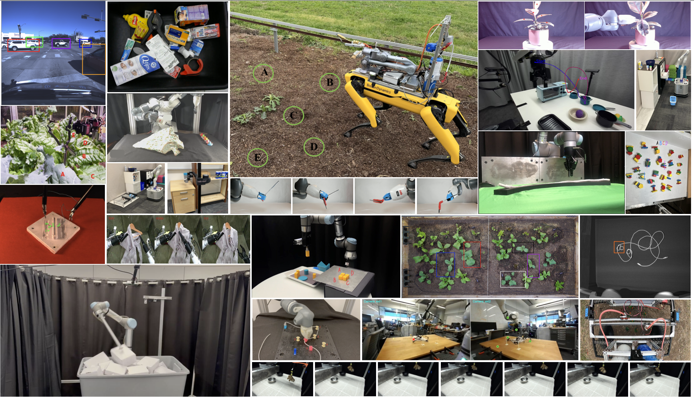
RoboVista: Evaluating Vision Language Models for Diverse Robot Applications
Robotics: Science and Systems (RSS), 2026
project page / paper / code / data / leaderboard
We present robot question answer(RQA), a framework for robotics visual question answering(VQA) and a dataset drawn from diverse applications for vision-language-model(VLM) evaluation.
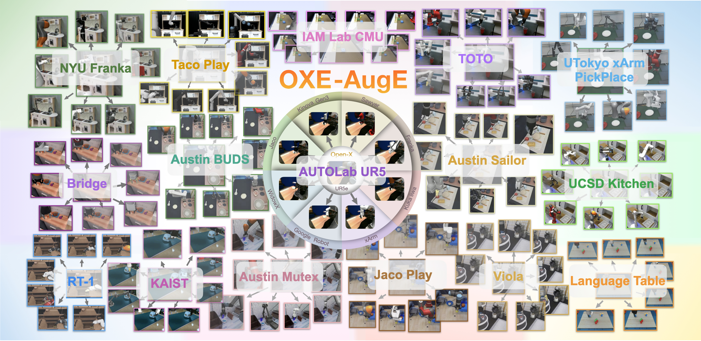
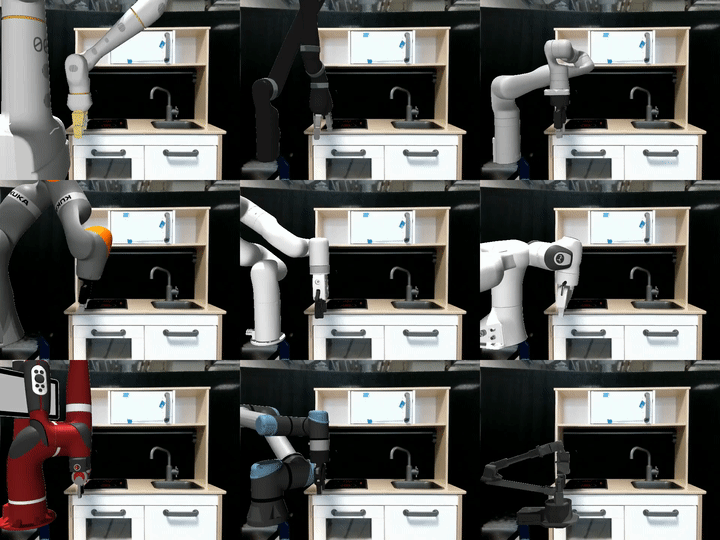
OXE-AugE: A Large-Scale Robot Augmentation of OXE for Scaling Cross-Embodiment Policy Learning
International Conference on Machine Learning (ICML), 2026 Spotlight (2.2%)
project page / paper / video / code / data
We augment 16 OXE datasets into 4.4 million trajectories across 9 robot types for each dataset.
Botany-Bot: Digital Twin Monitoring of Occluded and Underleaf Plant Structures with Gaussian Splats
IEEE/RSJ International Conference on Intelligent Robots and Systems (IROS), 2025
We created segmented 3D reconstructions of eight potted plants and used those to guide a robot's interaction with the plants to reveal occluded leaf structures.
GrowSplat: Constructing Temporal Digital Twins of Plants with Gaussian Splats
IEEE International Conference on Automation Science and Engineering (CASE), 2025
Temporal reconstructions of plants across multiple timesteps, combining 3D reconstructions with a robust sample alignment pipeline using a two-stage registration approach.
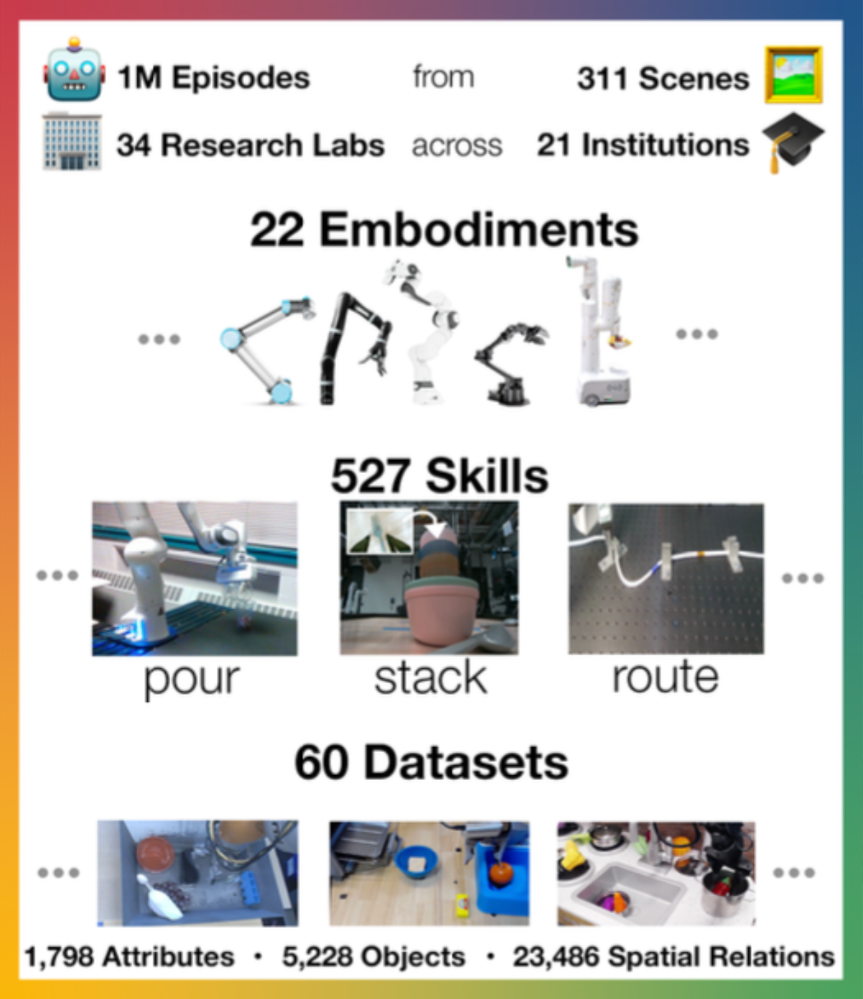
Open X-Embodiment: Robotic Learning Datasets and RT-X Models
International Conference on Robotics and Automation (ICRA), 2024 Best Conference Paper Award Oral Presentation
project page / code / PDF
A multi-institution project bringing together datasets across many robot platforms and skills, with a large model, RT-X, trained on the entire dataset.
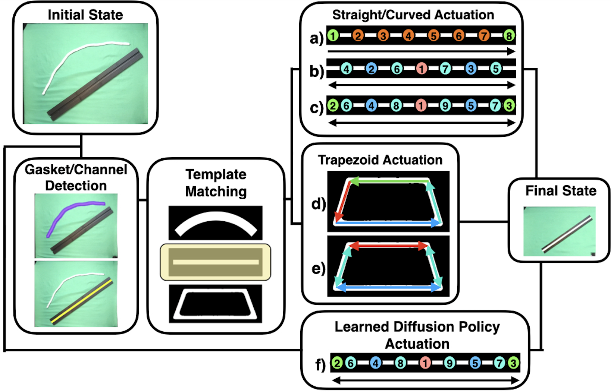
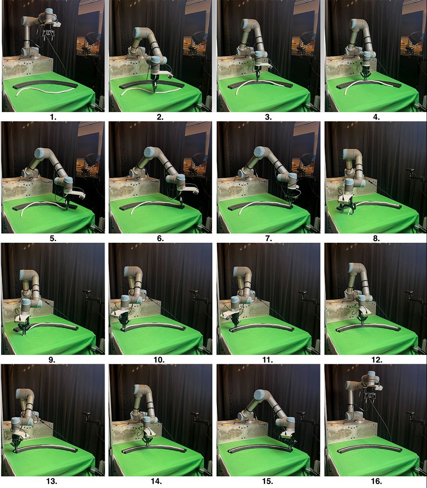
Automating Deformable Gasket Assembly
IEEE International Conference on Automation Science and Engineering (CASE), 2024
project page / paper / code
A novel gasket assembly task with three testbeds and a benchmark comparison between three procedural algorithms and one deep imitation learning approach across 100 trials.
All Publications
RoboVista: Evaluating Vision Language Models for Diverse Robot Applications
Robotics: Science and Systems (RSS), 2026.
project page / paper / code / data / benchmark / leaderboard
We present robot question answer(RQA), a framework for robotics visual question answering(VQA) and a dataset drawn from diverse applications for vision-language-model(VLM) evaluation.
OXE-AugE: A Large-Scale Robot Augmentation of OXE for Scaling Cross-Embodiment Policy Learning
International Conference on Machine (ICML), 2026 Spotlight (2.2%)
project page / paper / video / code / data
We augment 16 OXE datasets into 4.4 million trajectories across 9 robot types for each dataset.
Botany-Bot: Digital Twin Monitoring of Occluded and Underleaf Plant Structures with Gaussian Splats
IEEE/RSJ International Conference on Intelligent Robots and Systems (IROS), 2025
We created segmented 3D reconstructions of eight potted plants and used those to guide a robot's interaction with the plants to reveal occluded leaf structures.
GrowSplat: Constructing Temporal Digital Twins of Plants with Gaussian Splats
IEEE International Conference on Automation Science and Engineering (CASE), 2024
Temporal reconstructions of plants across multiple timesteps, combining 3D reconstructions with a robust sample alignment pipeline using a two-stage registration approach.
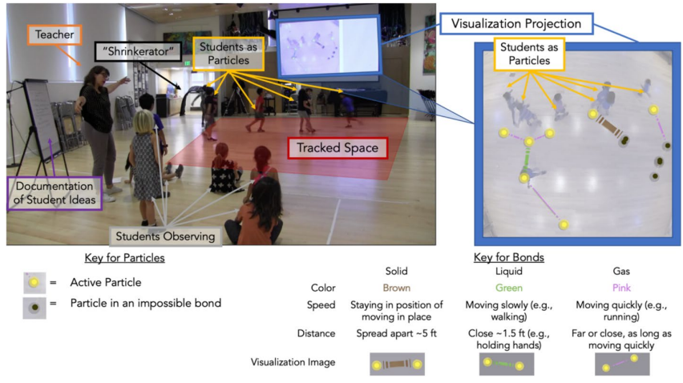
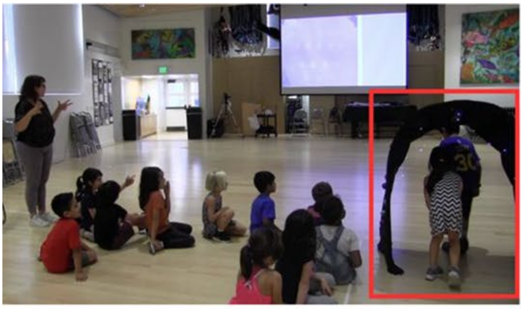
How children blend feedback in a mixed-reality environment for collective embodied learning
International Journal of Computer-Supported Collaborative Learning, 2025
This journal paper extends our CSCL 2022 paper.
Open X-Embodiment: Robotic Learning Datasets and RT-X Models
International Conference on Robotics and Automation (ICRA), 2024 Best Conference Paper Award Oral Presentation Best Student Paper Finalist Best Manipulation Paper Finalist
project page / code / PDF
A multi-institution project bringing together datasets across many robot platforms and skills, with a large model, RT-X, trained on the entire dataset. Carried out in collaboration with Google DeepMind and 33 labs across 21 institutions.
Automating Deformable Gasket Assembly
IEEE International Conference on Automation Science and Engineering (CASE), 2024
project page / paper / code / data / CAD files
A novel gasket assembly task with three testbeds and a benchmark comparison between three procedural algorithms and one deep imitation learning approach across 100 trials.
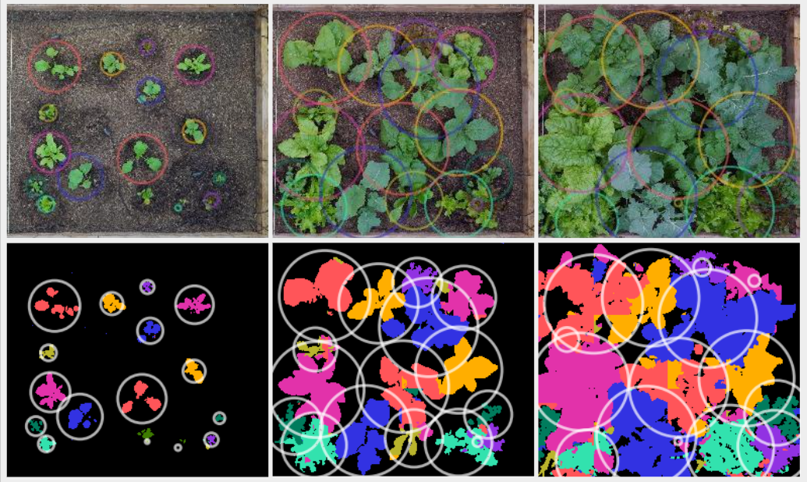
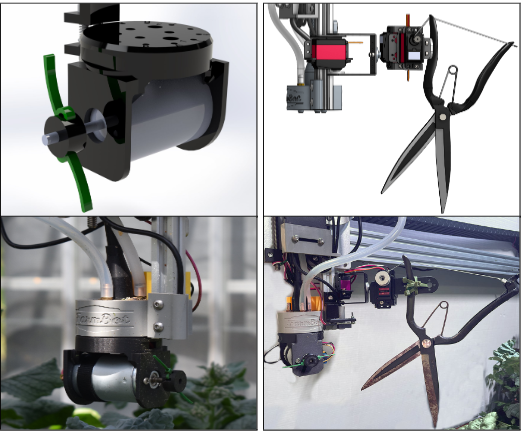
Automated Pruning and Irrigation of Polyculture Plants
IEEE Transactions on Automation Science and Engineering (TASE), 2024
project page / paper / code
This journal paper extends our CASE 2022 paper.
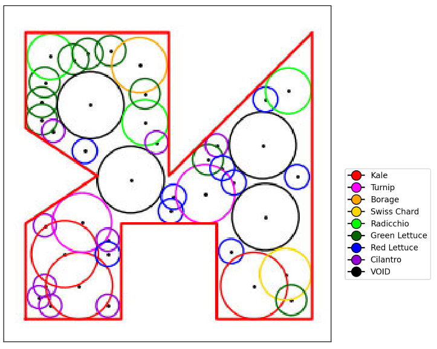
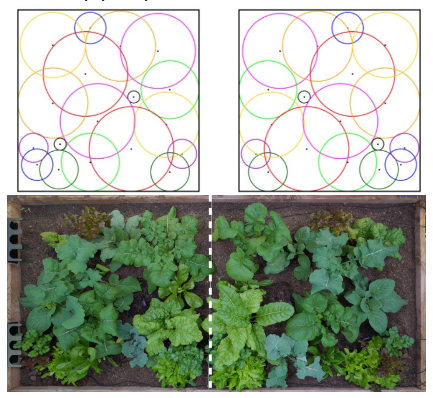
PolyPoD: An Algorithm for Polyculture Seed Placement
IEEE International Conference on Automation Science and Engineering (CASE), 2023
An algorithm for seed placement in polyculture settings that works for both convex and non-convex planting areas, across plant types and numbers.
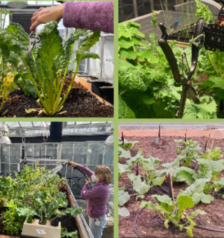
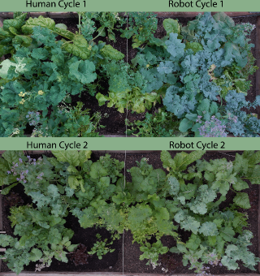
Can Machines Garden? Systematically Comparing the AlphaGarden vs. Professional Horticulturalists
International Conference on Robotics and Automation (ICRA), 2023 Oral Presentation Outstanding Paper (Automation) Finalist
project page / video / PDF / press (IEEE Spectrum) / press (Popular Science) / press (New Scientist)
Comparing human experts to AlphaGarden on similarly planted gardens across two 60-day cycles, evaluated on coverage, diversity, and water usage.

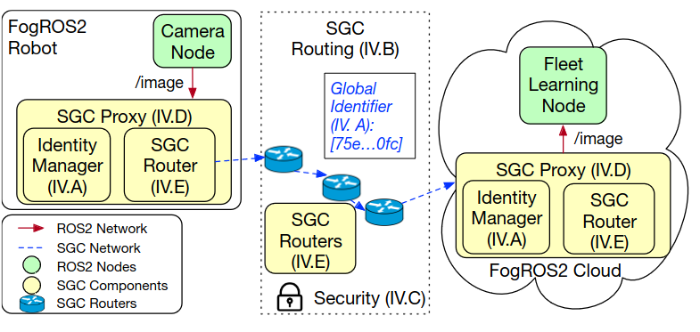
FogROS2-SGC: A ROS2 Cloud Robotics Platform for Secure Global Connectivity
IEEE/RSJ International Conference on Intelligent Robots and Systems (IROS), 2023
project page / video / PDF
A platform for connecting robots and robot components across physical locations and networks, securely and globally.
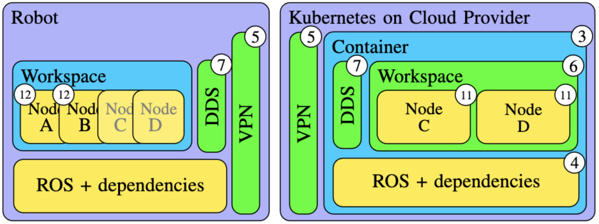
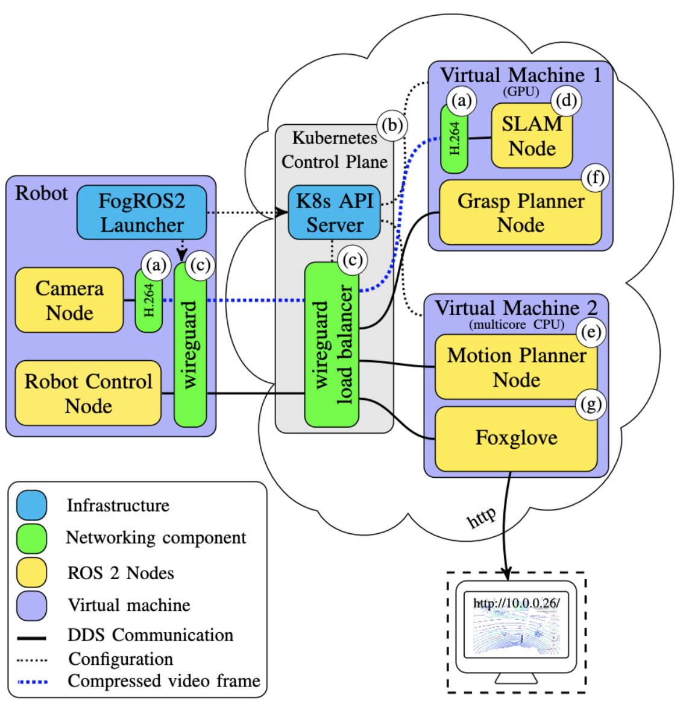
FogROS 2: An Adaptive Platform for Cloud and Fog Robotics Using ROS 2
International Conference on Robotics and Automation (ICRA), 2023
project page / PDF / code
An easy way for roboticists using ROS 2 to take advantage of cloud platforms including AWS, Azure, and GCS to run any portion of their pipeline.
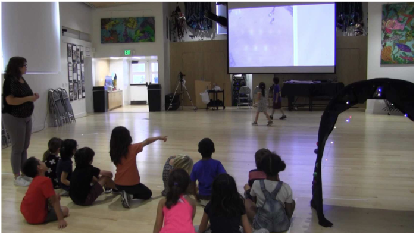
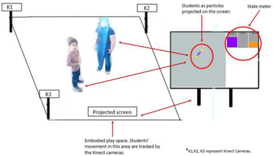
International Conference on Computer-Supported Collaborative Learning (CSCL), 2022
An interaction-analysis study of how children combine teacher-, peer-, and technology-provided feedback toward collective embodied learning in a mixed-reality environment. Extended in our journal paper.
Automated Pruning of Polyculture Plants
IEEE International Conference on Automation Science and Engineering (CASE), 2022 Best Conference Paper Award Oral Presentation
project page / PDF / code
Novel hardware and algorithms for automated pruning of polyculture plants, with results across four 60-day garden cycles. Extended in our journal paper.
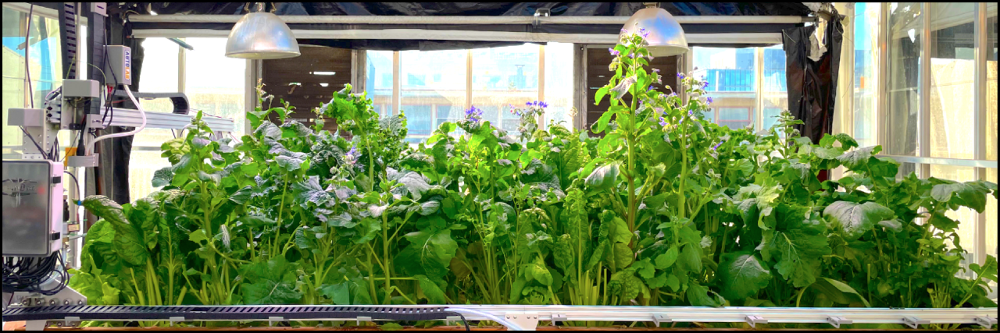
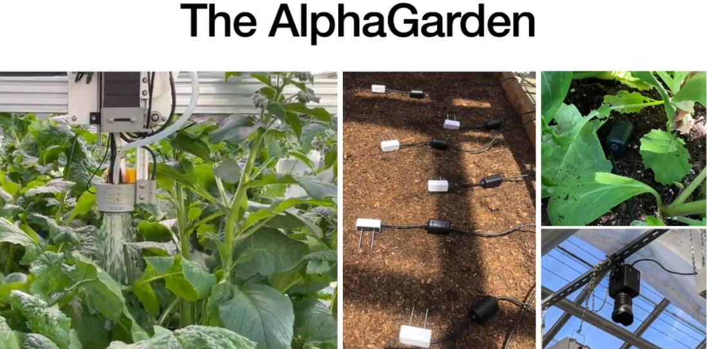
Assisting Polyculture Farming in Africa
AFRICON, 2021
Lessons from AlphaGarden, including its seed planting algorithm, can be leveraged for polyculture farming in Africa.
Democratizing Technology: The Confluence of Makers and Grassroot Innovators
ICCIG, 2015
Maker initiatives should embrace and integrate with the informal sector and grassroots innovators.
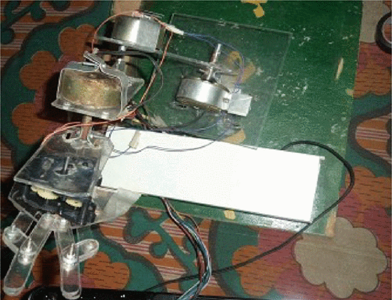
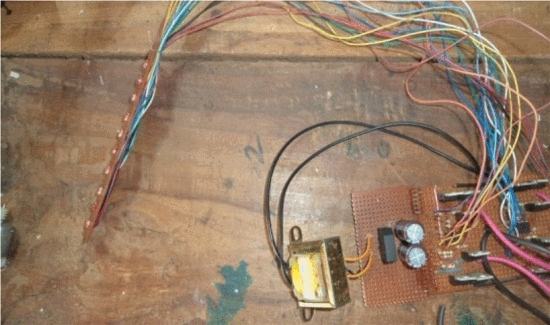
Design and Implementation of a Locally-Sourced Robotic Arm
AFRICON, 2013
A low-cost 5-DOF robot for STEM education, built from indigenously sourced parts and reused motors.
ATPS, 2012
Africa's STI policy should include an indigenous futures (strategic foresight) component.
Invited Talks
Aug 2026 “So You Want to Do Robotics Research? Absolutely! It is an Exciting Future,” CS 188: Introduction to AI, UC Berkeley
Jul 2026 “Scaling Deployable Embodied AI: Compute, Data, and Representations” (Lightning Talk), ML and Systems Rising Stars Workshop.
Jul 2026 Career Spotlight Talk, CariSurg MedTech Pathways Cohort
Jun 2026 “Robotics in Living Systems: Digital Twins, 4D Perception, and Occlusion-Aware Interaction,” Princeton University ECE
Jul 2024 “Robotics Gives Us an Exciting View of a Possible Future,” Lawrence Berkeley AI Camp
Honors, Awards & Grants
2026 MLCommons ML and Systems Rising Stars
2024 Richard S. Muller Fellowship in EECS, UC Berkeley
2021 UC Berkeley EECS Excellence Award
2021 UC Berkeley BAIR Research Ignition Award
2019 Outstanding Masters Research Award, College of Basic and Applied Sciences, MTSU
2019 Project Alloy Grant, Strange Loop Conference, St. Louis
2014 Finalist, Global Fab Awards, 10th International Fab Lab Conference, Barcelona
2012 1st Place (Team), Robotics Competition, IEEE Nigeria Section, Abuja
2012 Only African winner, “$10 Robot” Design Challenge, African Robotics Network
Grants & Fellowships
2025–27 Bakar BioEnginuity Impact Grant — funds four late-stage doctoral candidates each year for two years
2023 Scholarship, International Elite Summer School in Robotics & Entrepreneurship (Danish Ministry of Higher Education & Science; Innovation Centre Denmark; Novo Nordisk Foundation)
Service & Teaching
Co-organizer, Robotic Systems Designed for Underrepresented Communities, ICRA 2026
Associate Editor, IROS 2026
Co-organizer, Robotics in Africa Forum, IROS 2024
Co-organizer, Tutorial on Cloud and Fog Robotics with ROS2 and FogROS2, ICRA 2024
Co-organizer, Workshop on Lowering Barriers for Robotics Research, RSS 2023
Associate General Chair, CoRL 2022
Reviewer: T-FR, TMLR, ICRA, IROS, CASE, T-ASE, WACV, RA-L, RAM
L&S 25: Beyond the Uncanny Valley — Art, AI and Robotics
ENGR 3540: Introduction to Feedback Control
ET 4815: Heating, Ventilation and Air Conditioning
ENGR 3530: Electronics & Instrumentation
ENGR 3520: Digital Circuits Fundamentals